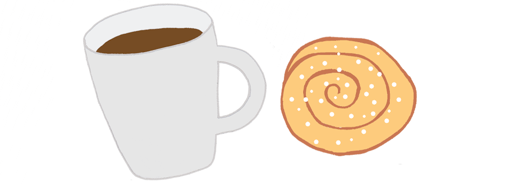

Svenska Fikadagar
Välkommen till Sidan för Svenska Fikadagar!

Nästa Fikadag:
Idag är det den
Om Sidan
Vill du veta när vi firar de olika fikadagarna i Sverige så har du kommit rätt!
Här har jag samlat fakta om varje dag, när den firas och hur det började, om det finns dokumenterat.
Ibland har en privatperson infört fikadagen för att uppmärksamma sin favoritbakelse och ibland har dagen en längre historia.
Hoppas du uppskattar denna sida!
Kanske kan du få lite inspiration inför dagens fikastund.